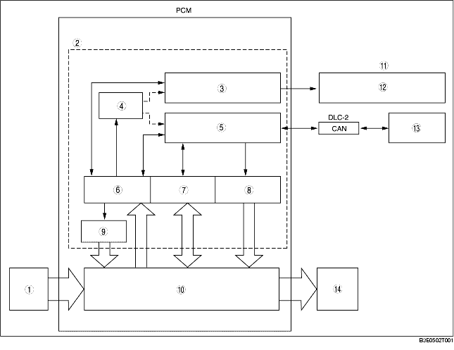

ON-BOARD DIAGNOSTIC (OBD) SYSTEM BLOCK DIAGRAM [FN4A-EL]
B3E050219090T02

.
1
Input parts
2
OBD system
3
Malfunction indication function
4
Memory function
5
Serial communication
6
Malfunction detection function
7
PID data monitoring function
8
Simulation function
9
Fail-safe function
10
Transaxle control system
11
Instrument cluster
12
AT warning light or MIL
13
WDS or equivalent
14
Output parts